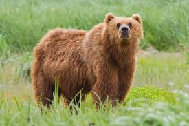
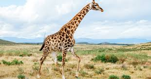

Bears, (family Ursidae), any of eight species of large short-tailed carnivores found in the Americas, Europe, and Asia.
The sun bear (Helarctos malayanus) is the smallest, often weighing less than 50 kg (110 pounds). The largest bear is either
the Kodiak bear (Ursus arctos middendorffi, a subspecies of Alaskan brown bear; see also grizzly bear) or the polar bear
(Ursus maritimus), depending upon which measurements are considered; either of these bears can weigh up to 720 kg (1,600 pounds).
The black bear (Ursus americanus) is common in parts of the United States and Canada.


The giraffe (genus Giraffa) encompasses four distinct species of long-necked, cud-chewing mammals native to Africa. Recognized for their towering height and unique appearance, giraffes have long legs and a striking coat adorned with irregular brown patches set against a lighter background.
As the tallest land animals on Earth, adult male giraffes, known as bulls, can reach heights exceeding 5.5 meters (about 18 feet), while the tallest females, called cows, typically stand around 4.5 meters (approximately 14.7 feet).
One of their most fascinating adaptations is their prehensile tongues, which can measure up to half a meter (about 18 inches) in length. This remarkable feature allows them to reach and consume foliage from trees nearly six meters (20 feet) above the ground, a significant advantage in their natural habitats.
Giraffes are commonly found in the grasslands and open woodlands of East Africa, where they gracefully roam and forage. In these environments, they are often spotted in wildlife reserves, providing a spectacular sight for visitors and researchers alike.

The lion (Panthera leo) is a large, powerfully built member of the cat family (Felidae) and ranks as the second largest cat species, surpassed only by the tiger. Renowned as an apex predator, lions sit at the top of the food chain, meaning they have no natural enemies or predators to threaten their existence. Often referred to as the "king of beasts," lions have captured human imagination and admiration throughout history, making them one of the most recognizable wild animals since ancient times.
Lions exhibit a fascinating pattern of nocturnal behavior, being most active during the night. They inhabit a variety of environments, although they have a preference for grasslands, savannas, dense scrub, and open woodlands. Historically, their range extended across large areas of Europe, Asia, and Africa; however, their population has dramatically declined. Today, lions are primarily found in sub-Saharan Africa, with the largest populations residing in protected areas and national parks.
In addition to their majestic appearance, lions are social animals, living in groups known as prides. These prides typically consist of a few related females, their young, and one or more males. This social structure helps them effectively hunt and defend their territory. An isolated population of about 500 lions also exists in the Gir Forest of India, representing the last remnants of the Asiatic lion subspecies.
Conservation efforts are critical for the survival of lions, as their habitats face threats from human encroachment, poaching, and climate change. Protecting these magnificent creatures is essential not only for biodiversity but also for maintaining the ecological balance in their habitats.

Monkeys represent a diverse group of nearly 200 species of tailed primates, distinguished from other primate families such as lemurs, tarsiers, and lorises. One of the key characteristics that sets monkeys apart is the presence of a tail—ranging from long, expressive appendages to small, barely noticeable nubs—along with specific skeletal features, including their narrow-chested bodies.
Most monkeys have relatively flat faces with short muzzles, contributing to their unique appearance. However, notable exceptions exist, such as baboons and mandrills, which possess more pronounced facial structures.
The majority of monkey species thrive in tropical forests, where they have adapted to a life of agility and mobility, typically moving on all four limbs. These agile creatures are primarily diurnal, meaning they are active during the day, with the exception of the durukuli, a species found in tropical regions of Central and South America, which is known for its nocturnal behavior.
Monkeys are social animals that often live in groups, called troops, which provide safety and facilitate foraging. Their diets are primarily herbivorous, consisting of fruits, leaves, seeds, and flowers, although some species may occasionally consume insects or small animals. The social structures, behaviors, and communication methods of monkeys vary widely among species, showcasing their adaptability and intelligence.
Due to habitat destruction, hunting, and the illegal pet trade, many monkey species face significant threats, prompting conservation efforts to protect their populations and natural habitats. Preserving these fascinating primates is vital not only for biodiversity but also for the health of the ecosystems they inhabit.

- Cookie
- Earl
- Banana Pudding
Monkeys represent a diverse group of nearly 200 species of tailed primates, distinguished from other primate families such as lemurs, tarsiers, and lorises. One of the key characteristics that sets monkeys apart is the presence of a tail—ranging from long, expressive appendages to small, barely noticeable nubs—along with specific skeletal features, including their narrow-chested bodies.
Most monkeys have relatively flat faces with short muzzles, contributing to their unique appearance. However, notable exceptions exist, such as baboons and mandrills, which possess more pronounced facial structures.
The majority of monkey species thrive in tropical forests, where they have adapted to a life of agility and mobility, typically moving on all four limbs. These agile creatures are primarily diurnal, meaning they are active during the day, with the exception of the durukuli, a species found in tropical regions of Central and South America, which is known for its nocturnal behavior.
Monkeys are social animals that often live in groups, called troops, which provide safety and facilitate foraging. Their diets are primarily herbivorous, consisting of fruits, leaves, seeds, and flowers, although some species may occasionally consume insects or small animals. The social structures, behaviors, and communication methods of monkeys vary widely among species, showcasing their adaptability and intelligence.
Due to habitat destruction, hunting, and the illegal pet trade, many monkey species face significant threats, prompting conservation efforts to protect their populations and natural habitats. Preserving these fascinating primates is vital not only for biodiversity but also for the health of the ecosystems they inhabit.
- Cookie
- Earl
- Banana Pudding